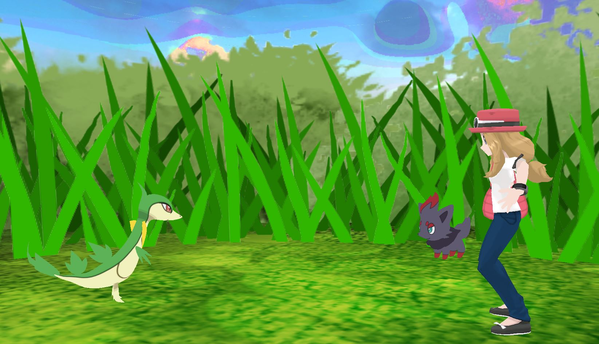

This project features a pokemon trainer encountering a wild zorua in a clearing. The user can press a button to trigger the throw of a pokeball, causing the appearance of the pokemon servine. The models come from the games, while the animations were all done by me in blender. multiple layers of grass were displayed on cylinders and then warped to create a swaying effect.
Download Project